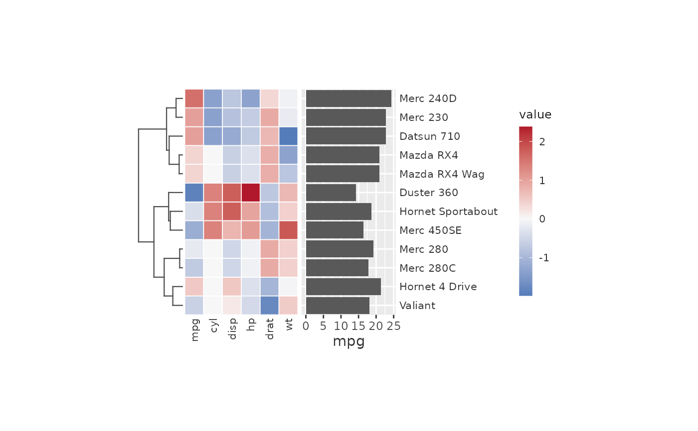

Puts any ggplot on one side of the heatmap and lines it up cell by cell.
Map the row names (for "left" and "right") to y, or the column names
(for "top" and "bottom") to x; ggcalor places each name at its row or
column, following the clustering, ordering and splits. Everything else
(geoms, the value axis, scales, theme, legend) stays as you wrote it.
Usage
calor_panel(plot, side = c("right", "left", "top", "bottom"), size = 25)Value
An object to add to a ggcalor() plot with +.
Details
Names in the plot's data that are not in the heatmap are dropped with ggplot2's usual warning. The along axis gets no labels or title of its own: the heatmap's names are drawn once, on the outermost track.
Examples
m <- scale(as.matrix(mtcars[1:12, 1:6]))
cars <- data.frame(car = rownames(m), mpg = mtcars$mpg[1:12])
bar <- ggplot2::ggplot(cars, ggplot2::aes(mpg, car)) + ggplot2::geom_col()
ggcalor(m) + calor_dendro(rows = TRUE) + calor_panel(bar, side = "right")
